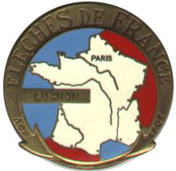

Volume 8 Issue 1 - January/February 2003
2003 Brevet Schedule
2003 Season Introduction
Logo Clothing and Jersey Updates
Roundrock 200k Brevet
SIR 100 km Populaire Results
Remembering Roger Street
Flèche Northwest
Road Snippets

NOTE: Please send any equipment reviews, PBP insight or ride reports for the March/April newsletter to Jon Muellner! I know most of you can write so let's generate some copy folks! Thanks to Mark and Vik for contributing for this issue!
Please have memberships renewed before the 200 km (March 15) to reduce stress on the start of that ride - you must have it if you are doing PBP! You can get a Membership Application/Renewal here and send it to:
Terry Zmrhal
9531 112th Ave NE
Kirkland, WA 98033
(425) 883-1701
SIR Email List
For those of you on-line, join in the SIR email list! It's a great way to share info, ride schedules, car-pooling to events and training with other SIR members. To get on go to http://www.phred.org/mailman/listinfo/sir. It's easy!
SIR Volunteers Needed
SIR members wishing to help out on any of the brevets, please contact the organizer directly and offer your support. This is an important series this year will be easier if we all pitch in!
| Date | Distance | Organizer | Route |
|---|---|---|---|
| Mar 15 | 200 km | Greg Cox | 2002 route with slight modifications |
| April 5 | 300 km | Ken Carter | Whidbey Island/Bellingham/Lake Cavanaugh |
| April 18-19 | Flèche Northwest | Peter McKay | Semi-ah-moo finish |
| May 3 | 400 km | Bill Dussler | Starting from Enumclaw, we'll head south through Eatonville to explore the western foothills of the Cascades and Mt St Helens before heading west and north back to the start. |
| May 16-18 | Flèche Pacifique | Barry Bogart, BC Randonneurs | Harrison Hot Springs finish. |
| May 24-25 | 600 km | Jon Muellner | Olympic Peninsula circuit from 2002. |
| June 13-14 | 600 km | Mark Thomas | |
| June 13-16 | 1000 km | Mark Thomas | |
| June 15 | 400 km | Mark Thomas | |
| July 4 | 300 km | Terry Zmrhal | |
| July 4-5 | 600 km | Terry Zmrhal | |
| July 5 | 300 km | Terry Zmrhal | |
| July 6 | 200 km | Terry Zmrhal | |
| July 26 | 300 km | Paul Johnson/Dave Read/Brian List | |
| July 27 | 200 km | Paul Johnson/Dave Read/Brian List | |
| Sept 13 | 100 km Populaire | Jan Heine | |
| Sept 20 | 200 km | Wayne Methner | |
| Sept 26-28 | 1000 km | Mark Thomas (or volunteer!) |
By Mark Thomas
Well, Seattle randonneurs - it's PBP time again. This should be a great year. Since the last PBP in 1999, our club has grown dramatically. We have more members and more events than ever before. One nice measure of that growth is the points accumulated by SIR for participation in Seattle brevets and listed in the annual ACP plaquette. (See RUSA 2002 Summary of Results). We doubled our participation in 2002 (over 2001) and became the fourth ranked randonneurs club in the world.This year, it would be great to have a large and well-qualified team representing Seattle in France in August. In 1999, we had 22 riders and 15 finishers. Our brevet schedule should provide a good opportunity to qualify by the deadline (see info on PBP qualification and PBP FAQs). We also have several opportunities to stay sharp between late May and the August PBP. Riders may want to test themselves with our 1000k in June to get experience with a longer, multi-day distance. We will also have two brevet weekends in July - a 3-day extravaganza in Eastern Washington July 4th weekend and a 2-brevet weekend out of the Olympia area on July 26-27.
See you in Paris!
By Jon Muellner
Ken Carter and the Poly Jersey committee has new SIR jerseys, bibs and shorts available. A new design by Andi Pihl for the Castelli Squadra Team Gear SIR Club Jerseys looks fabulous!Bill Dussler worked with Land's End to create some smashing off the bike clothing for SIR members.
By Vic Ringkvist
The fall issue of the RUSA newsletter provides a list of brevets for 2003. I noted that the earliest was to be held on January 25 in Austin, Texas. In that my wife, Wanda, and I anticipated being in San Antonio visiting her son and his family about that time, I decided to include that brevet in our schedule. So we packed up the Taurus, mounted the bicycle on the roof rack and headed first for California to visit the wife's sister and nieces and then Texas, making sightseeing stops alone the way.I got in several scenic training rides along the route: The first on US1 along the Mendocino and Sonoma coasts, two rides in southern California fighting traffic on the Pacific Coast Highway and then relaxing on the Santa Ana River bikeway, a nice ride from Tucson, Az, over Gates Pass to the Saguaro National Park and back, and finally a 70 mile ride with a seven mile, 3000 foot climb at the end in Big Bend National Park. (By the way, if you've never visited Big Bend but find yourself in west Texas, be sure to check it out - beautiful area.)
I called Russell Hahn, the Austin area RBA and apparently the ride director for all their brevets this year. He told me that the ride started from the Dell Diamonds Ballpark in Roundrock, Texas, a few miles north of Austin. (Roundrock is headquarters for Dell Computers.) I had Wanda drop me off at the park's parking lot well before the 6AM start time on a dark and misty morning and milled around with 18 others waiting for the start. About five minutes before start time someone's rear tire popped loudly - apparently preferring suicide over making the upcoming ride. We waited while its rider changed tubes and got rolling at 0610 along a smooth and fast asphalt drive out of the park. The group included three recumbents and a fold up bike. There were no women riders.
The road didn't remain smooth and fast for long but the entire group, riding at a relaxed pace, stayed together for the first four or five miles before breaking into two large groups. As bad luck (or poor planning or lack of attention) would have it I found myself riding between the two groups. Eventually the group ahead made a right turn at an intersection and then stopped about 300 yards beyond the intersection. I caught them while they were standing there discussing whether they'd come the right way. We waited to see what the slower group would do at the intersection. They went straight through. We gave chase which eventually left me, the slowest rider, behind everyone. About dawn I passed a rider whose chain had slipped off his small chainwheel. He assured me that he didn't need help so I went on to find Gary, one of the recumbent riders, waiting at the next turn for the fellow. For the whole ride Gary was diligent in ensuring that no one got lost or left too far behind.
By now the faster riders had ridden through the slower group and were out ahead. I noted that the slower group although 300 yards ahead wasn't gaining on me so I decided to try to catch them. Eventually I did, but with an effort that I'm not sure was worth it. I could have hung back and rode up with the fellow with the slipped chain because he also caught up, though Gary on his recumbent didn't. I noticed that the locals waved at all the cars and pickups we met. Part of Texas hospitality, I guess. A while later I got to chatting with a fellow named John. I told him that I'd driven 2800 miles to ride on rough tarmac roads in 40 degree weather in the drizzle - something I could do every day at home. He said, "You should have been here Tuesday it was 89 degrees". For me it's a good thing it was cold and wet on the brevet rather than 89 degrees.
There was only one control - at the turn around point in Cameron, Texas - but there was a convenience store at Circleville at about the 30 mile point that everyone stopped at. There I chugged a pint of chocolate milk and rode on.
I was caught by a fellow who complemented me on my home made rear luggage rack. I briefly explained how I'd made it and then he asked about the "wheel guard". Wheel guard? Wheel guard? "Yeah, you know around the rear wheel." "Ah, you mean the fender." Now there was one dry land cyclist! (On the other hand it might be that all the duct tape I use to hold the disintegrating plastic fender together may have confused him.)
Gary on his recumbent had arrived before I left the convenience store and I noted that the other two recumbents hadn't stopped at all so eventually I found myself with another rider drafting behind Russell. I had caught him after a couple of riders had caught me and invited me to work with them in a paceline. One of my paceline mates rode what appeared to be a brand new Lemonds Buenos Aires, the other, a Davidson. A Davidson in Texas? After a few miles I felt that I might be pushing it a bit too hard in the paceline so when we caught Russell I dropped out and tagged along behind his recumbent at an easier pace. After a few miles I became a bit embarrassed about not pulling at the front so asked Russell his views on the etiquette of a standard bike drafting behind a recumbent. He said that a recumbent doesn't get much benefit from drafting behind a standard bike and that he was just pedaling along at his own pace and that I was welcome to ride along or go on alone if I found the pace too slow.
Eventually I did find it too slow and because there was a group of seven riders not too far ahead, decided to see if I could catch them. I got to within a couple hundred yards of them before giving up the attempt. Slowly after that they increased their distance on me. But one of the group was also dropping behind. I recognized him as one of the two I'd ridden with in the paceline, the Lemonds rider. I followed him at a distance of 200, increasing to 400, yards into Cameron. About five miles out of Cameron I met the first three riders headed back to Roundrock and just as I entered the town I met another three riders headed home.
I found the bulk of cyclists at the Texas Cafe, all enjoying a sit down lunch. I sat down with Tom, the fellow I'd chased into Cameron.. We both ordered the smoked turkey sandwich with French fries. (The stuff in the sandwich turned out to be the same highly processed sawdust and meat from artificial turkeys that we're served three times a week at the cafeteria where I work. I should have ordered a hamburger.) Tom was from Indianapolis. He had been in Houston for a meeting a couple days earlier and had rented a bike in Austin for the ride. When I told him that I was from Washington state he introduced me to the other rider of our short-lived three-man paceline, Guy Oldfield, from Richland, Washington. Guy had been a SIR member in 1999 and was again getting into biking. He was in Texas for a meeting in San Antonio on the following Monday and had brought his own bike, the Davidson, along.
While trying to finish off my so-called turkey sandwich I poured over the route sheet. Although the route was basically an out and back, some extra distance had been added to the beginning of the ride in order to make it long enough, thus the last ten or so miles were not going to be on the same roads as we'd ridden in the morning. Tom, whose rented bicycle didn't have a computer, was relying on others to show him the way. He asked if I knew the way back and I said, "I think so", trying to make it sound like an indecisive "I think so". He must have heard a decisive yes because he said, "In that case I'll follow you back". Sounded like a lot of responsibility to me.
Before leaving Cameron I had to cross the street to a convenience store to buy some Gatoraide to replenish my liquid supply. There I met Gary and Pat - Pat also on a recumbent. Half of the others who'd eaten at the cafe had already left by the time Pat, Gary, Guy, Tom and I left the control. There were no riders behind us. Russell had apparently pulled into town, gotten his brevet card signed and headed back without much of a stop. Eventually Gary and Pat stopped to remove clothing. Tom, Guy and I rode on. The area for the first 30 miles or so east of Roundrock is mostly farm land - pretty typical looking mid-western countryside - something you see from eastern South Dakota to, obviously, east Texas, and from eastern Nebraska to central Ohio. But slowly, going out to Cameron, the tilled fields become fewer and the pastures more frequent until it's all pastureland - not range land such as one sees further west, but fenced pasture fields.
I saw two eastern blue birds on the ride and a dead owl on the shoulder. Sighting the blue birds was a pleasure. They were common when I was a kid in Michigan in the 50's but I seldom get to see them anymore. They winter in eastern Texas. The dead owl - one of the larger species, caused an entirely different emotion. Road kill doesn't normally bother me - there's too much of it to be shocked over its existence. But I can't recall ever seeing a road-killed owl. I seldom see owls other than perhaps a swoop of white in the car's headlights a couple times a year. To me owls are mysterious, nocturnal flying animals - something just beyond the normal. It's a shock to see one killed in such a common fashion - as though it were nothing more than a deer or opossum.
There were nine or ten of us that gathered at the convenience store at Circleville. There I downed another pint of chocolate milk and we all started back to Roundrock together. After several hours of intermittent heavy mist and light drizzle it now began to rain. There were 21 miles left.. About a mile from the convenience store Guy had a flat and Gary, ever attendant to his flock of cyclists (I suppose they're called herds in Texas) stayed with him as did Tom and two other riders. Russell, Pat, John and two others whose names I can't remember (one of whom had lived in Vancouver, B.C., and had ridden a bike from Vancouver to San Francisco) and I went on. Eventually the four of us on standard bikes dropped Russell and Pat on their recumbents. For much of the rest of the ride John explained to me the meteorological and cultural differences between Austin and Dallas (Austin is a much better place to live - not as windy and not as cold and you don't have to put up with the yuppies and their pampered offspring of Plano, a suburb of Dallas), about how the freeways in Houston were once the pride of the state but were now a disgrace, etc. John had ridden Paris Brest Paris in 95 and 99 but has been out of a job for the past year and probably won't be able to afford to go back this year.
The four of us arrived at the finish in 10:04. A good time for me. The route had numerous gentle hills - gentle enough that I never once shifted out of my middle chain ring. That, and riding with others most of the way, even with the rather lengthy lunch break in Cameron, made the ride faster than the three other 200s I have done. Wanda was waiting for me when we arrived and by the time I'd changed some clothes and mounted the bicycle on the car roof, the others arrived. After having Russell sign my brevet card and shaking hands with some of the fellows and telling Guy that I'd see him in the spring I hopped into the Ford and we started our long drive back to the Pacific Northwest.
Saturday March 1 dawned on over 90 cyclists at Redhook Brewery with beautiful sunshine and warm temps. Everyone was ready for the 2003 season to begin! Mark Thomas provided us with cue sheets (more or less accurate) and an apology for the nice weather. Everyone shared in a minute of silence for Roger Street of BC Randonneurs who passed away last week and who planned to join us for the ride. Within a few short hours people were streaming up to Snoqualmie Falls and back down again to partake in the annual feast at the Brewery. It was a wonderful start to this PBP year and it was great to see old friends and make new ones as SIR continues to grow. Thanks to Mark and Wayne for putting it all together! Here's the results of the day:
SIR 100 km Populaire Results - March 1, 2003
Name Time Jan Acuff 5:22 Erik Anderson 3:59 Eric Armstrong DNF Karen Armstrong DNF Saliha Azzam 4:16 Tom Baker DNF Shane Balkovetz 5:36 Peter Beeson 5:33 Tonya Berg 5:22 Gregg Bleakney 4:13 Brian Blue 4:51 Tom Brett 4:49 Tim Brooks 4:17 Lisa Brudvik 4:56 Bob Brudvik 4:56 Ken Carter 4:30 Brian Caditz 5:30 Paul Claeys DNF Eric Courtney 5:35 Greg Cox 4:15 James Davis DNF Robert Denney DNF William Dussler 4:21 Orin Eman 3:59 Rick Haight 4:22 Amy Harman 5:40 Doug Hallam 3:57 Joe Hammond 4:50 Tim Hamnett 4:54 Jan Heine 3:31
Name Time Trent Hill 5:10 David Huelsbeck 4:25 Kevin Humphreys 4:16 Christof Irran 4:39 Hsiaoyu Jiang 4:47 Paul Johnson 4:32 Phil Jones 4:26 Ron Kaplan 5:26 Danny Kelly DNF Thomas Killian 5:06 Ken Krichman 4:50 Lindsey Lawrence 5:38 Thomas Lawrence 4:57 Rhoda Lawrence 4:57 Ron Lee 4:35 Teresa Ledoux-Peterson 4:57 Moishe Lettvin 5:37 Peter Liekkio 5:22 Brian List 4:54 Patty Lyman 5:26 Dave Mahler 4:05 David Malkin 4:28 Sue Matthews 5:36 E."Max" Maxon 5:36 Peter McKay 4:13 Chirag Mehta DNF Allison Mohr DNF Don Moe 4:47 Melinda Morrow 5:40 Jon Muellner 4:17
Name Time David Nestvold 4:13 Terry Olmsted 5:06 Clark Pace 5:22 Jesse Pace 5:22 Kent Peterson 4:12 Brian Peterson 4:57 Kenneth Philbrick 3:31 Amy C. Pieper 4:47 Robin J. Pieper 4:47 Richarrd Rayos 5:19 Dave Read 3:59 Graham Read 4:05 Owen Richards 4:43 Mark Roberts 4:33 William Roberts 4:58 Steve Rossano 4:54 Mark Scarff 4:20 Sylvia Shiroyama 5:05 Robert Simmons 4:55 Donald Smith 5:17 Greg Sneed 5:06 James Sprague 4:16 Kenneth Stagg 6:02 Cynthia Stagg 6:02 Adam Stritzel 4:44 Mark Thomas 5:39 Jeff Tilden 5:04 Daniel Turner 3:52 Lynne Vigesaa 4:35 Cindy Yates 4:51 Georges Yates 4:51
By Jon Muellner
On Tuesday morning (Feb 25) at about 6:15 Roger Street of BC Randonneurs had a heart attack and died while riding his bicycle. Many SIR members knew him and appreciated all the effort he put into our sport in this area. I met him on my first Rocky Mountain 1200 km last year and he was amazingly calm and confident in the midst of such a big event. Here are some words from Eric Fergusson:
"The heart attack is unexpected. By all accounts Roger was in excellent shape. He had done a fast 100 km training ride on Sunday and was look forward to a quick SIR (Seattle) Populaire this coming Saturday.
Roger at SIR 2002 PopulaireRoger has been a central figure in BC Randonneurs since he rode his first brevets in 1993. He is a two-time finisher at both Paris Brest Paris and the Rocky Mountain 1200, and a six-time super randonneur. He is one of only 9 BC riders to have earned 2 Brevet Randonneur 5000 pins (sometimes called 'Super 5000'.) In 1998 he was the winner of the John Hathaway Award with an event distance total of 5676 km... and it was Roger who first started calling the award by the name we all now commonly use - the Iron Butt Award. In 2000, he was looking for a change of pace and rode across Canada - Spanish Banks to Cape Spear, Nfld. - 7433 km, average riding speed 25 km/hr, 151 km/day.
In the fall of 1998 Roger became club treasurer, and oversaw the period of extraordinary growth which followed. For the four years that he was on the randonneur committee his strong opinions, bluntness, and clarity of thought helped keep the club on track on an ongoing basis. It would not be going too far to say that by 2002 he had become the conscience of the randonneur committee. In 2002 he teamed up with wife Sharon to co-direct the Rocky Mountain 1200 - perhaps our club's finest moment."
Our sincerest thoughts go out to his wife Sharon, his daughters Lesley and Heidi, and his brothers Bryan and Ray. He will be greatly missed by many. More stories of Roger and photos are on the BC Randonneurs site: http://www.randonneurs.bc.ca/

By Jon Muellner
The 2003 Flèche Northwest is Friday, April 18 through Sunday, April 20. Peter McKay is again putting on this fun team event that will test your meddle and let you get to know your teammates real well!The premise of the Flèche, as devised by the French, is that on Easter weekend the randonneuring clubs from around the country ride in teams from their respective towns to a common destination (in southern France) for a banquet dinner. The rules are minimal: each team comprises of 3 to 5 bicycles, they must cover a minimum of 360 Km in exactly 24 hours, they must have on course controls to insure integrity of the route and travel unsupported (except at designated controls) on a unique route from the other teams. Rumors are the word "Flèche" translates as "arrows to a target" or "spokes of a hub." The destination is usually a resort community providing a festive surrounding for waiting family and friends. Completing a Flèche is also required for attaining a Randonneur 5000 standing with Audax Club Parisien.
Seattle International Randonneurs return to Resort Semiahmoo. We will hold our banquet celebrating this year's Flèche Northwest on Sunday morning at 9am.
Team name, proposed route, team member names, addresses and team entry fee is due by April 4th. Early registration is encouraged since the organizer will review route descriptions for adherenceto the Flèche rules. The organizer greatly appreciates receiving your proposed route in Microsoft Streets & Trips format. However, this is not mandatory.They should be sent to:
Peter McKay
8837 32nd Avenue SW,
Seattle, Washington 98126-3722
(telephone 206 932 6702).The fee is $30 per team. The banquet will cost $25 per adult and $13 per child. Registration forms are avaialbel on the SIR 2003 Flèche Northwest page.
Interested in the Raid Pyreneen this August? Jon Muellner is participating in this permanent starting July 29 and it would be wonderful to have other SIR riders in on the fun. Somewhere around 40,000 feet of climbing over 18 cols should make it a ride you'll never forget! If you are interested contact Jon Muellner.
Terry Zmrhal's Winter Series VII training rides had very good turnouts again this year. Thanks to Terry for the effort on this well-received annual ritual!
SIR has accumulated enough ACP points this year to become the 2nd ranked region in the US, trailing only Davis, CA. In 2002, Seattle more than doubled its participation over the prior year, moving it ahead of Southern Florida and Boston. SIR is also 4th in world right behind Melbourne Victoria (AUS), Davis Bike Club (USA) and Lower Mainland BC (CAN)!
Mark Thomas, Terry Zmrhal, Jon Muellner, Bill Dussler, Greg Cox & Wayne Methner
Membership Fee:
$8.00 - full membership w/e-mail newsletter or
$15.00 - full membership w/printed newsletter.
Membership Address:
c/o Terry Zmrhal
9531 112th Ave NE
Kirkland, WA 98033
(425) 883-1701